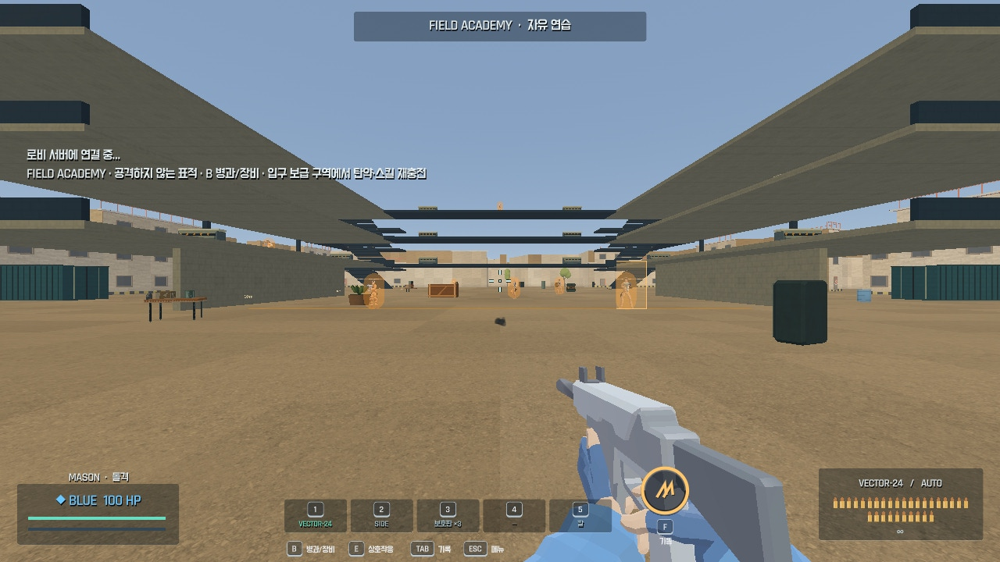
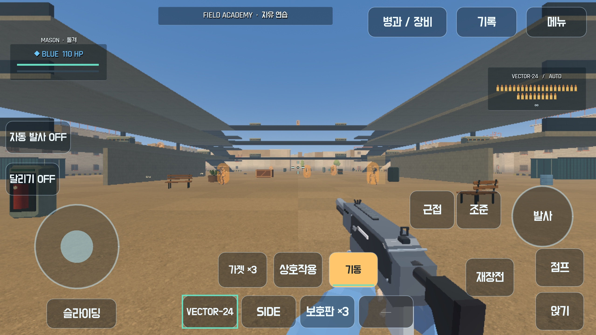
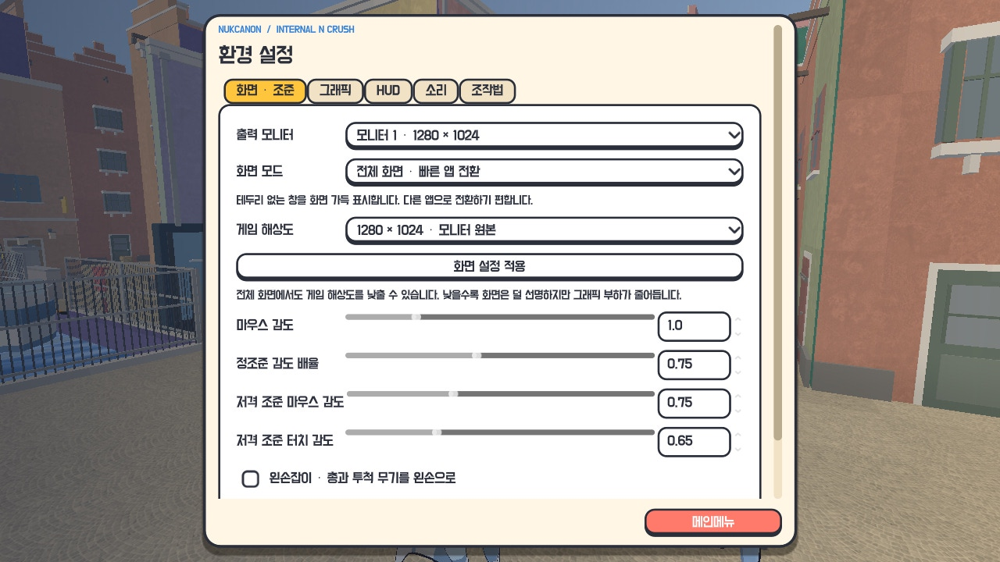
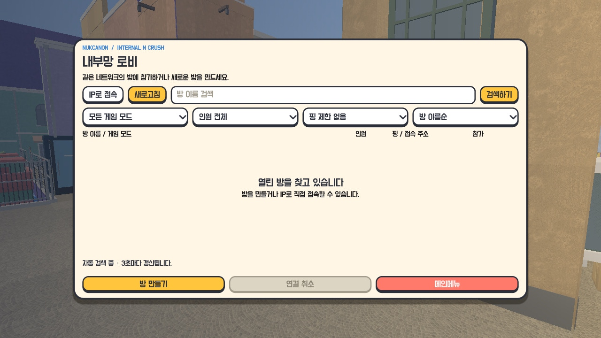
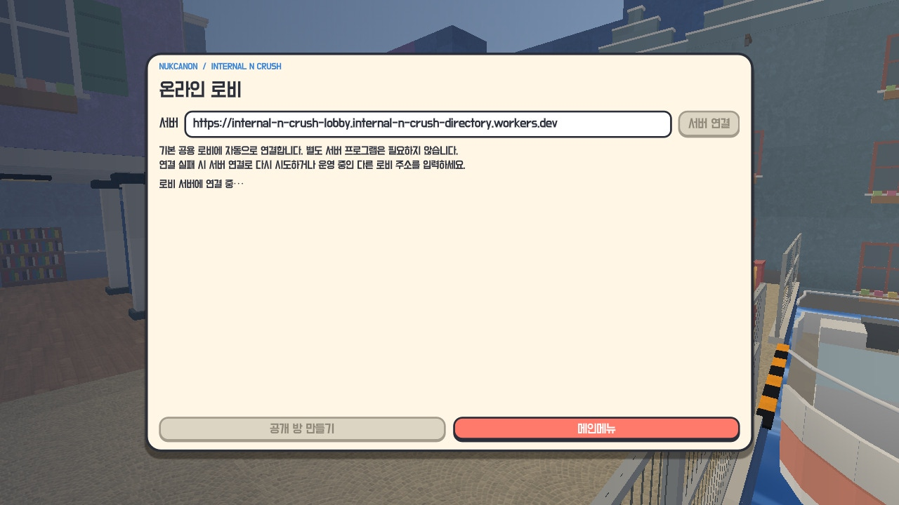

CARTOON TEAM FPS
Internal N Crush
친구들과 함께 하는 카툰 슈터
5개 게임 모드 · 최대 32명 · 6개 병과 · 실내·실외 31개 전장. 연습장에서 장비를 익히고, 봇이나 다른 플레이어와 겨뤄 보세요.
v2.0.5 · Windows 64비트 / 웹 · 모바일 가로 화면


조작방법


WASD 이동 · 마우스 왼쪽 발사 / 오른쪽 조준
Space 점프 · Ctrl 앉기 · Shift 달리기 · Shift 또는 같은 WASD 키 두 번: 슬라이딩
R 재장전 · 1–3 총기·가젯 · 5 근접 들기·클릭 공격
Q 즉시 근접 · G 가젯 · F 스킬
E 상호작용 · B 병과·장비 · Esc 게임 메뉴
공병 렌치는 아군 포탑을 수리합니다. 의료용 카빈·샷건의 범위 회복은 C (10초 간격). 전체 조작은 설정 → 조작법에서 확인하세요.
스마트기기 조작방법


가로 화면으로 플레이하세요. 왼쪽 스틱으로 이동하고 오른쪽 화면을 밀어 조준합니다. 스틱을 중앙으로 되돌렸다가 1초 안에 같은 방향으로 다시 밀면 슬라이딩합니다.
발사·재장전·근접은 해당 버튼을 누르세요. 조준·앉기·달리기는 한 번 눌러 켜고 다시 눌러 끕니다. 장비·스킬은 화면 아래에 있습니다.
자동 발사와 에임 보정은 설정에서 켜거나 끌 수 있습니다. 에임 보정은 40m 이내에만 작동하며, 저격·지정사수 총은 확대 조준 중앙의 적에만 적용됩니다.
게임 방식
팀 데스매치 · 개인전 · 제한 부활 · 거점 점령 · 폭탄 설치/해체의 5개 모드입니다. 먼저 연습장이나 봇 전투로 익혀 보세요.
설치/해체에서는 공격팀이 폭탄을 설치하고 수비팀이 막습니다. 지정 위치에서 E를 유지하세요. 스마트기기는 설치·해체 버튼을 누릅니다.
설정 메뉴


화면·조준 — 해상도·전체화면·감도·주 사용 손
그래픽 — 품질과 효과, 다운로드판 물리 수준
HUD / 소리 — 화면 표시 크기·농도와 음량
조작법 — 전체 키 안내
웹판과 다운로드판 모두 자동 품질이 기본입니다. 성능에 따라 노말맵·조명·그림자·장식 효과를 조절하며, 해상도는 자동으로 바꾸지 않습니다. 기본설정으로 복원하면 처음 설정으로 돌아갑니다.
멀티플레이 접속
Windows끼리 내부망 접속


같은 네트워크와 게임 버전을 사용하세요. 한 명이 내부망 로비 → 방 만들기로 방을 열고, 나머지는 목록에서 참가합니다.
방이 안 보이면 IP로 접속을 사용하고 방장의 Windows 방화벽에서 개인 네트워크 통신을 허용하세요.
웹·Windows가 함께할 때는 아래 공용 온라인 로비를 사용하세요.
웹·Windows 공용 온라인 로비


웹의 온라인 로비, Windows의 인터넷 로비를 열면 Cloudflare 공용 로비에 자동 연결됩니다. 주소 입력이나 별도 서버 프로그램 없이 같은 버전끼리 방을 만들고 참가하세요. 이전 버전은 온라인 로비에 연결할 수 없으니 최신 버전을 받아 주세요. 방장은 경기가 끝날 때까지 게임을 켜 두세요.
학교·DMZ·VPN에서도 같은 온라인 방 목록에서 참가할 수 있습니다. 빠른 참가를 누르면 원하는 게임 모드를 골라 바로 들어갈 수 있습니다. 인터넷 연결이 필요하며, 학교 방화벽이 직접 게임 연결을 차단하면 참가가 실패할 수 있습니다.
별도 로비를 운영하려면 NAS/Linux 설정 ZIP과 서버 설치 안내를 이용하세요.